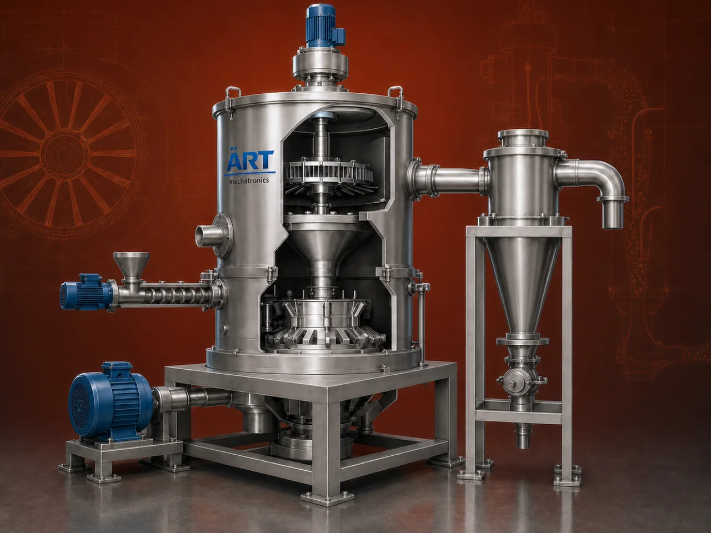

Air Classifier Mill Machine (ACM – Ultra Fine Grinding & Particle Classification System)
An Air Classifier Mill Machine (ACM) is an advanced grinding system designed for ultra-fine pulverization and precise particle size classification in a single integrated unit.

About the Air Classifier Mill Machine
Unlike conventional grinding machines, an air classifier mill combines impact grinding with dynamic air classification, ensuring that only particles of the desired size are discharged while oversized particles are automatically recirculated for further grinding.
This makes ACM machines ideal for industries requiring tight particle size distribution, fine powders, and high product quality, such as pharmaceuticals, chemicals, food processing, pigments, minerals, and specialty materials.
ART Mechatronics offers high-performance air classifier mills, engineered for precision, efficiency, and consistent ultra-fine grinding performance.
One machine, many names
Buyers search for this equipment under many terms — we manufacture all of them:
Working Principle of Air Classifier Mill
Material is fed into the grinding chamber via:
Inside the mill:
Ensures precise particle size control
Final product is collected through:
Types of Air Classifier Mills
Industries Using Air Classifier Mill
💊 Pharma & Healthcare
- Drug powders
- Fine formulations
⚗️ Chemical Industry
- Chemicals
- Pigments
- Specialty powders
🍃 Food & FMCG Industry
- Spices
- Food powders
- Starch
🏗️ Mineral Processing
- Calcium carbonate
- Talc
- Minerals
💄 Cosmetic Industry
- Fine powders
♻️ Recycling Industry
- Powder materials
Features & Advantages
- Ultra-fine grinding with precise control
- Integrated classification system
- Uniform particle size distribution
- High efficiency and productivity
- Suitable for heat-sensitive materials
- Reduced over-grinding
- Energy-efficient operation
- Compact and advanced design
Technical Highlights
- Capacity: Custom (kg/hr to tons/hr)
- Grinding Type: Impact + Air Classification
- Particle Size: Adjustable (micron level)
- Construction: Mild Steel / Stainless Steel
- Classifier Speed: Adjustable
- Drive: Electric motor
- Dust Control: Cyclone + Dust Collector
Turnkey Acm Solutions
ART Mechatronics offers:
- Complete ACM system design
- Machine selection based on material
- Integration with dust collection systems
- Installation & commissioning
- After-sales service & AMC
Why Choose Art Mechatronics
- Expertise in ultra-fine grinding systems
- Advanced classification technology
- Customized solutions for precision industries
- High-performance and durable machines
- Proven performance across applications
Applications
- Pharmaceutical Manufacturing Units
- Chemical Processing Plants
- Food Processing Units
- Mineral Grinding Plants
- Cosmetic Manufacturing Units
Industries that use the Air Classifier Mill Machine
Related Size Reduction & Grinding machines
Get pricing & specs for the Air Classifier Mill Machine
Share the product, target capacity, current process and plant location. These details help our engineers discuss the right machine or line configuration.
One partner, from design to start-up
ART Mechatronics designs, manufactures, installs and commissions your Air Classifier Mill Machine solution with regional presence in India, UAE and Thailand.